| Kreator obliczania przemieszczeñ pionowych |
|
|
Obliczanie przemieszczeñ pionowych jest procesem z³o¿onym. Mo¿na wybieraæ spo¶ród wielu wariantów obliczeñ:
przemieszczenia bezwzglêdne, przemieszczenia wzglêdne, za³o¿enie bezb³êdno¶ci wyznaczenia punktów nawi±zania lub
jego odrzucenie. Z tego powodu program Pmk obliczanie przemieszczeñ pionowych wykonuje przy u¿yciu kreatora,
który prowadzi u¿ytkownika przez kolejne etapy procesu obliczeniowego.
Na pocz±tku kreator prosi o wybór sposobu prowadzenia obliczeñ.
Mo¿na wybraæ spo¶ród czterech sposobów:
- Obliczanie przemieszczeñ bezwzglêdnych na podstawie zmian ró¿nic przewy¿szeñ h-h´ (metoda ró¿nicowa).
- Obliczanie przemieszczeñ bezwzglêdnych na podstawie ró¿nic rzêdnych H i H´.
- Obliczanie przemieszczeñ wzglêdnych na podstawie zmian ró¿nic przewy¿szeñ h-h´ (metoda ró¿nicowa)
- Obliczanie przemieszczeñ wzglêdnych na podstawie ró¿nic rzêdnych H i H´.
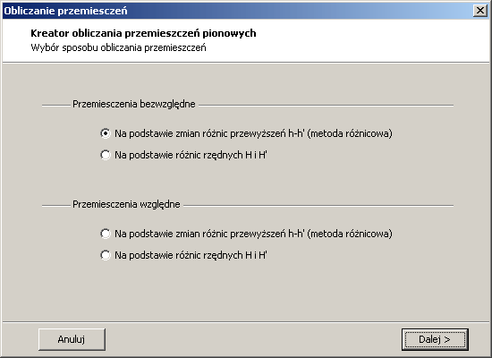
Rys. 5.4 Wybór sposobu obliczania przemieszczeñ
Obliczanie przemieszczeñ na na podstawie ró¿nic rzêdnych H i H´
realizowane na podstawie wspólnego wyrównania pomierzonych ró¿nic rzêdnych.
W wyniku uzyskuje siê rzêdne reperów w pomiarze wyj¶ciowym i aktualnym. Wielko¶ci
przemieszczeñ oblicza siê z ró¿nicy miêdzy rzêdnymi wyj¶ciowymi a rzêdnymi aktualnymi
badanych reperów.
Przemieszczenia pionowe mo¿na równiez obliczyæ na podstawie zmian ró¿nic przewy¿szeñ
h-h´ (metod± ró¿nicow±). Sposób ten polega na obliczeniu zmian
ró¿nic wysoko¶ci miêdzy poszczególnymi reperami w pomiarze wyj¶ciowym i aktualnym
oraz wyrównanie ich procedur± parametryczn±. W wyrównaniu tym parametrami s±
bezpo¶rednio wielko¶ci przemieszczeñ reperów.
Po wybraniu sposobu prowadzenia obliczeñ przemieszczeñ
pionowych kreator prosi o wskazanie cyklu pomiarowego, dla którego nale¿y wykonaæ obliczenia.
Obliczenia s± zawsze wykonywane wzglêdem cyklu wyj¶ciowego. Mo¿na zaznaczyæ tylko jeden cykl pomiarowy,
dla którego nale¿y wykonaæ obliczenia. W przypadku gdy we wskazanym cyklu jest zbyt ma³o obserwacji do
obliczenia przemieszczeñ, kreator wy¶wietli odpowiedni± informacjê i zakoñczy dzia³anie.
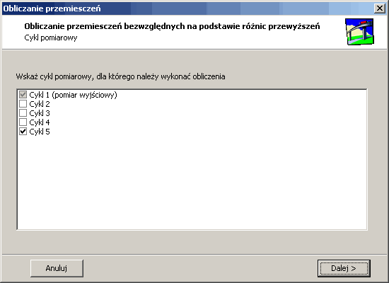
Rys. 5.5 Wybór cyklu pomiarowego, dla którego nale¿y wykonaæ obliczenia.
Po wskazaniu cyklu pomiarowego kreator wykonuje
wstêpne sprawdzenie danych obserwacyjnych. Kreator sprawdza czy jest wystarczaj±c ilo¶æ obserwacji.
Dla przemieszczeñ obliczanych metod± ró¿nicow± sprawdza czy wszystkie obserwacje z cyklu,
dla którego nast±pi obliczenie przemieszczeñ znajduj± siê w cyklu wyj¶ciowym, a wiêc czy bêdzie mo¿liwe
obliczenie przemieszczenia dla ka¿dego reperu z cyklu wyj¶ciowego. Wy¶wietla równie¿ ostrze¿enia o obserwacjach dodatkowych,
które nie bêd± uwzglêdniane w obliczeniach. Podczas sprawdzania danych pokazany jest wska¼nik,
który pokazuje postêp obliczeñ (rys. 5.6).
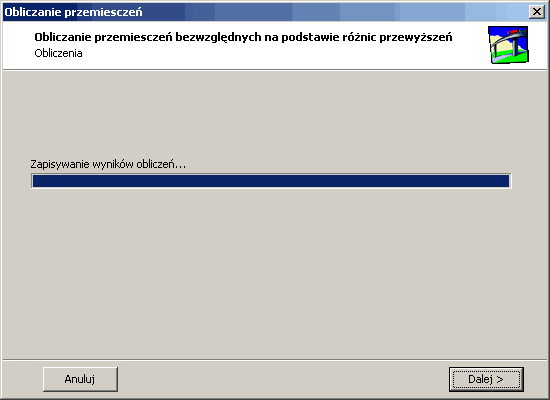
Rys. 5.6 Wska¼nik postêpu obliczeñ.
Je¿eli wstêpna kontrola danych wej¶ciowych zakoñczy siê pomy¶lnie kreator przechodzi
do nastêpnego etapu, w którym nale¿y wskazaæ punkty odniesienia (rys. 5.7).
W przypadku obliczania przemieszczeñ wzglêdnych mo¿liwe jest wskazanie tylko
jednego punktu odniesienia, natomiast dla przemieszczeñ bezwzglêdnych nale¿y
wskazaæ co najmniej dwa repery odniesienia.
Je¿eli wybrano obliczanie przemieszczeñ pionowych na podstawie zmian ró¿nic
przewy¿szeñ h-h´ do wyboru s± wszystkie repery z cyklu wyj¶ciowego podane
w tabeli Obserwacje Dh... . Natomiast w przypadku
obliczeñ prowadzonych na podstawie ró¿nic rzêdnych H i H´ mo¿na
wybieraæ tylko spo¶ród reperów, które znajduj± siê w tabeli Repery sta³e...
.
Przycisk s³u¿y do przeniesienia zbioru reperów
zaznaczonych na li¶cie wszystkich reperów do listy reperów przeznaczonych na
punkty odniesienia. Przycisk przenosi wszystkie
repery bez wzglêdu na zaznaczenie. Natomiast przycisk
pozwala na dodanie reperów wed³ug wskazanego filtru. Np. filtr "Rp*"
przenosi wszystkie repery rozpoczynaj±ce siê od liter "Rp".
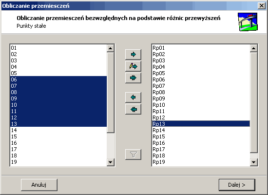
Rys. 5.7 Wybór reperów przeznaczonych na punkty odniesienia.
Po wyborze reperów odniesienia kreator przechodzi
do nastêpnej czê¶ci obliczeñ. Je¿eli jest to obliczanie przemieszczeñ wzglêdnych nastêpuje wyrównanie obserwacji,
a rezultaty obliczeñ s± od razu zapisywane do dokumentu i kreator koñczy swoje dzia³anie.
W przypadku obliczania przemieszczeñ bezwzglêdnych kreator wykonuje wyrównanie wstêpne
zgodnie z zasad± wyrównania swobodnego sieci. Na podstawie funkcji niewiadomych wyznaczonych z wyrównania
oraz b³êdów ¶rednich tych funkcji przeprowadzana jest kontrola sta³o¶ci wskazanych reperów odniesienia
oraz identyfikacja grup reperów sta³ych.
Po zakoñczeniu obliczeñ kreator wy¶wietla wyniki identyfikacji. W tym etapie trzeba
wybraæ grupê reperów sta³ych, która ma byæ wziêta do obliczeñ. Mo¿na zmieniæ parametry identyfikacji
grupy reperów sta³ych: minimaln± ilo¶æ reperów sta³ych oraz wspó³czynnik k. Po zmianie tych parametrów
nastêpuje ponowna identyfikacja grup reperów sta³ych. Lista grup reperów sta³ych jest wy¶wietlona w
prawym dolnym rogu. W panelu po prawej stronie s± wy¶wietlane dane dotycz±ce wskazanej grupy reperów sta³ych.
Informacje dotycz±ce wskazanej grupy reperów sta³ych s± pogrupowane z pomoc± zak³adek, które pozwalaj±
prze³±czaæ siê miêdzy list± reperów a wykresami.
Lista reperów wchodz±cych w sk³ad grupy reperów odniesienia zawiera
warto¶ci przemieszczeñ wskazanych reperów, b³±d wyznaczenia tych przemieszczeñ oraz
obliczon± dla podanego wspó³czynnika k tolerancjê. Przy nazwie ka¿dego punktu
jest pole wyboru. Odznaczenie tego pola powoduje, ¿e taki punkt nie bêdzie traktowany
jako reper odniesienia.
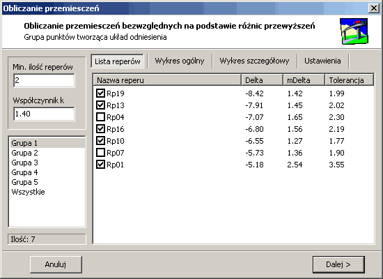
Rys. 5.8 Lista reperów wchodz±ca w sk³ad grupy punktów odniesienia.
W celu u³atwienia procesu decyzyjnego, któr± grupê reperów odniesienia nale¿y
uznaæ za sta³± mo¿na obejrzeæ przemieszczenia reperów na wykresach. Wykres ogólny
przedstawia wybran± grupê reperów odniesienia na tle wszystkich punktów przeznaczonych
na repery odniesienia. Ka¿dy reper wchodz±cye w sk³ad wybranej grupy punktów
odniesienia jest pod¶wietlony kolorem ciemno-czerwonym. Wykres ten pomaga zidentyfikowaæ
grupê reperów sta³ych, których warto¶ci przemieszczeñ oscyluj± wokó³ zera, a
wiêc znajduj±c± siê najbli¿ej ¶rodka ciê¿ko¶ci utworzonego uk³adu.
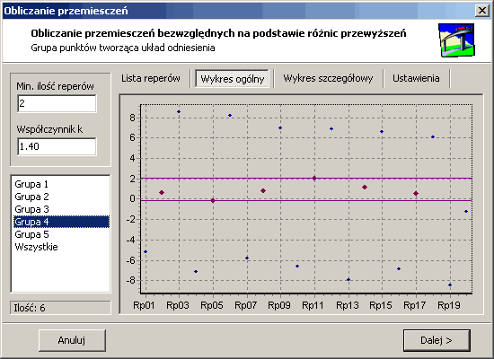
Rys. 5.9 Prezentacja wektorów przemieszczeñ wszystkich reperów
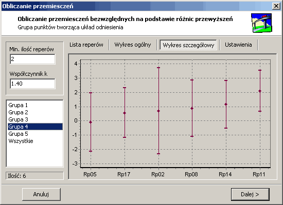
Rys. 5.10 Prezentacja wektorów przemieszczeñ wybranej
grupy reperów wraz z ich przedzia³ami ufno¶ci
Wykres szczegó³owy przedstawia tylko repery
wchodz±ce w sk³ad grupy reperów odniesienia wraz z granicami przedzia³u ufno¶ci dla
poszczególnych reperów. Wykres ten ma charakter pogl±dowy poniewa¿ identyfikacja grup
reperów sta³ych przeprowadzana jest na podstawie b³êdów wyznaczenia ró¿nicy przemieszczeñ
par reperów obliczonych podczas wyrównania.
Po wyborze reperów stanowi±cych uk³ad odniesienia, kreator prosi o wybór
sposobu prowadzenia obliczeñ przemieszczeñ bezwzglêdnych. Do wyboru s± dwie opcje.
Pierwsz± jest wyrównanie swobodne, które jednocze¶nie z wyrównaniem przeprowadza
transformacjê uzyskanych przemieszczeñ na uk³ad odniesienia tworzony przez repery sta³e.
Prowadzenie rachunków w ten sposób powoduje czê¶ciow± eliminacjê b³êdów systematycznych
i przypadkowych, a co za tym idzie zmniejszenie wielko¶ci poprawek i b³êdu ¶redniego przemieszczeñ.
Druga opcja pozwala na wykonania wyrównania sztywnego,
z za³o¿eniem bezb³êdno¶ci identyfikacji zbioru punktów odniesienia. Podczas wyrównania przyjmuje siê,
¿e przemieszczenia reperów odniesienia s± równe zeru i bezb³êdne.
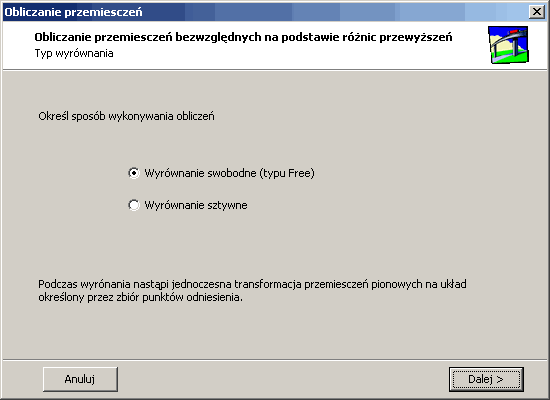
Rys. 5.11 Wybór sposobu prowadzenia obliczeñ
Po wyborze sposobu prowadzenia obliczeñ
nastêpuje ostateczne wyrównanie pomierzonych ró¿nic wysoko¶ci. Po zakoñczeniu obliczeñ
wy¶wietlana jest informacja o wielko¶ci b³êdu m0, a wyniki obliczeñ s±
zapisywane do dokumentu.
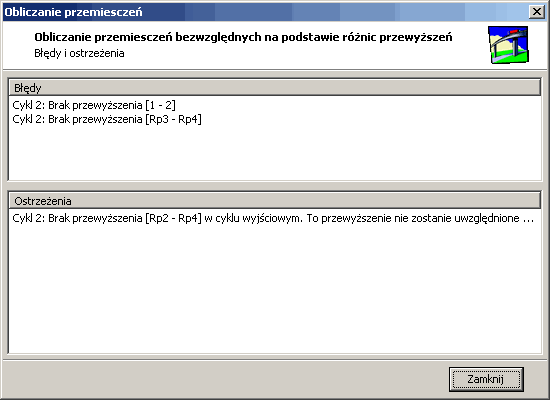
Rys. 5.12 B³êdy i ostrze¿enia wykryte podczas kontroli danych
Program Pmk umo¿liwia generowanie
fikcyjnych obserwacji przewy¿szeñ miêdzy reperami. Podobnie jak w przypadku obliczania
przemieszczeñ pionowych proces generowania obserwacji jest przeprowadzany przy u¿yciu kreatora.
W pierwszym kroku nale¿y ustaliæ kryteria, jakimi ma siê kierowaæ kreator podczas obliczeñ.
Mo¿ña wybieraæ jedn± z dwóch opcji:
- Generowanie przemieszceñ ewidentnych
- Generowanie przemieszczeñ na granicy wyznaczalno¶ci.
Oprócz tego mo¿na ustaliæ czy nale¿y generowaæ kilka baz odniesienia.
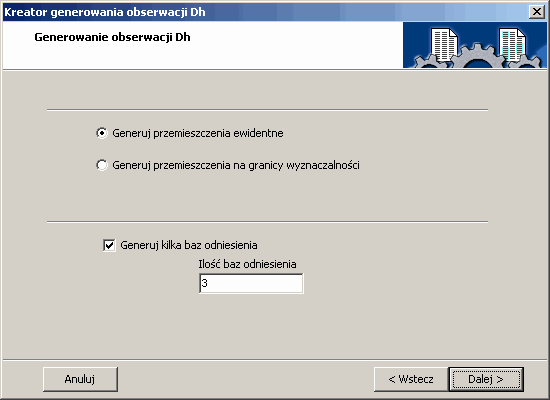
Rys. 5.13 Kryteria generowanych obserwacji przewy¿szeñ miêdzy reperami..
W nastêpnym kroku nale¿y utworzyæ
listê nazw reperwów sta³ych oraz listê reperó badanych. W programie Pmk przyjêto konwencjê,
¿e nazwy reperów odniesienia rozpoczynaj± siê od przedrostka "Rp�, natomiast nazwy reperów badanych
s± nazywane kolejnymi numerami.
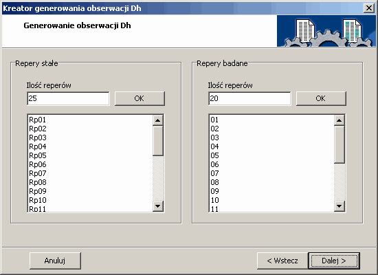
Rys. 5.14 Lista reperów badanych oraz reperó odniesienia
Po utworzeniu nazw reperów kreator przechodzi do obliczeñ. W pierwszym etapie
obliczeñ generowane s± rzêdne prawdziwe reperów badanych w cyklu aktualnym i
wyj¶ciowym. Najpierw obliczane s± rzêdne reperów badanych w cyklu wyj¶ciowym.
S± to warto¶ci przypadkowe wyznaczane przy pomocy generatora liczb losowych.
Nastêpnie na podstawie wygenerowanych warto¶ci dla cyklu wyj¶ciowego obliczane
s± rzêdne dla cyklu aktualnego.
Po tych czynno¶ciach jest utworzona lista reperów odniesienia
oraz reperów badanych z wygenerowanymi rzêdnymi prawdziwymi w obu cyklach pomiarowych.
Na tej podstawie s± generowane obserwacje obarczone b³êdem przypadkowym,
takim jaki uzyskuje siê podczas pomiaru. Podczas obliczeñ kreator przyjmuje warto¶æ m0 = 0.7.
Po zakoñczeniu obliczeñ
wszystkie obserwacje s± zapisywane do dokumentu.
 - usuwa zaznaczony wiersz z tabeli.
- usuwa zaznaczony wiersz z tabeli. - otwiera okno z podstawowymi informacjami o programie.
- otwiera okno z podstawowymi informacjami o programie.